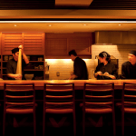

Roberta K., Ontario
Nous avons passé un moment incroyable au Japon.
Malgré le temps super chaud et ridicule, c'était incroyable. Le voyage était au-delà de ce que nous aurions pu organiser nous-mêmes. Des visites aux hébergements, nous n'aurions jamais pu trouver une combinaison aussi parfaite de qualité et de variété.
À mon avis, les visites ont été le clou de notre voyage. Les guides touristiques étaient incroyables et compétents. Ils étaient utiles et amusants. Honnêtement, nous ne pouvons pas déterminer quelle tournée a été la meilleure car les expériences étaient si variées.
John Given, Los Angeles
Merci encore d'avoir planifié un voyage aussi spécial et parfaitement organisé pour nous. Nous vous recommanderons certainement à tous nos amis, qui veulent maintenant aller au Japon après avoir entendu parler de tout le plaisir que nous avons eu! Nous espérons que nous reviendrons bientôt au Japon également.
Lisa et Ruben, Floride

Nous avons passé un moment incroyable au Japon. Nous ne pouvons pas vous remercier assez de nous avoir aidés avec le voyage.
Nous savons que nous n'aurions jamais pu voir autant si nous l'avions prévu nous-mêmes. Vous avez vraiment rendu cette expérience si insouciante et agréable. Nos guides touristiques étaient merveilleux et vos recommandations ont été extrêmement utiles!
Brett et Kirsten, Californie
Ma femme et moi venons de rentrer de notre voyage Fuji Travel, et c'était fantastique. Ils ont une excellente attention aux détails et les informations qu'ils ont rassemblées ont été extrêmement utiles en cours de route.
Certains disent que les Américains ne se sentiront jamais aussi étrangers partout dans le monde que lorsqu'ils sont au Japon, mais toutes les informations fournies par Fuji Travel au préalable ont facilité l'adaptation.
J'ai vraiment l'impression que nous avons vécu une expérience que nous n'aurions probablement pas pu organiser par nous-mêmes. Même si on avait pu, ça aurait pris un temps fou à s'arranger. Même alors, nous n'aurions probablement pas pu trouver les mêmes excellents guides et organiser de bons billets pour des choses comme le dernier jour du tournoi de sumo. Si nous retournons au Japon, nous n'hésiterons pas à retravailler avec Fuji Travel.